Quem são os protagonistas em capacitação?
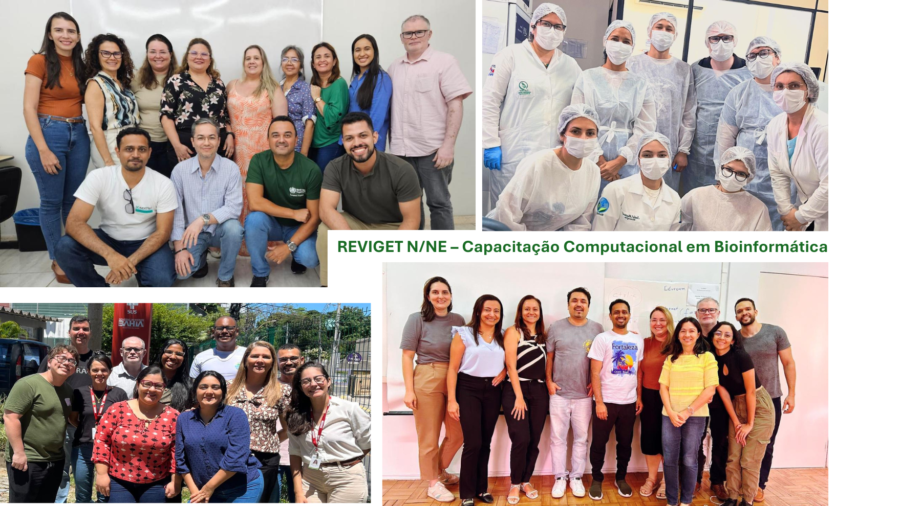
Visão Geral
Capacitando talentos em Bioinformática para a Vigilância Genômica da Tuberculose
O programa de capacitação do REVIGET N/NE em Bioinformática é uma jornada de formação de longo prazo, pensada para fortalecer as competências técnicas e analíticas de profissionais que atuam na linha de frente da vigilância genômica da tuberculose no Brasil. Iniciado em 2024 com um encontro presencial marcante, o programa segue ao longo de 2025 com uma intensa agenda de 24 encontros virtuais, promovendo o aprendizado contínuo e colaborativo.
Atualmente, 29 profissionais participam ativamente dessa trajetória de formação, representando quatro estados estratégicos das regiões Norte e Nordeste: Amazonas (8), Pará (8), Ceará (7) e Bahia (6). Cada um traz sua experiência, saberes e perspectivas, contribuindo para a construção de uma rede regional sólida e comprometida com a inovação em saúde pública.
Conheça abaixo o perfil dos nossos trainees — protagonistas dessa transformação!
Trainees
Estado do Amazonas
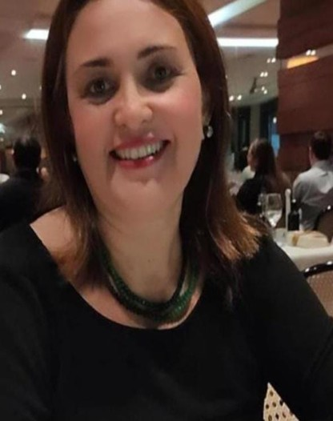 Adriana Ayden Ferreira
Possui graduação em Farmácia com habilitação em Bioquímica pela Universidade Federal do Amazonas. É especialista em Epidemiologia Aplicada aos Serviços do SUS pela Fundação Oswaldo Cruz (Fiocruz), campus Brasília. Atualmente, atua como Farmacêutica Bioquímica no Laboratório Central de Saúde Pública do Amazonas.
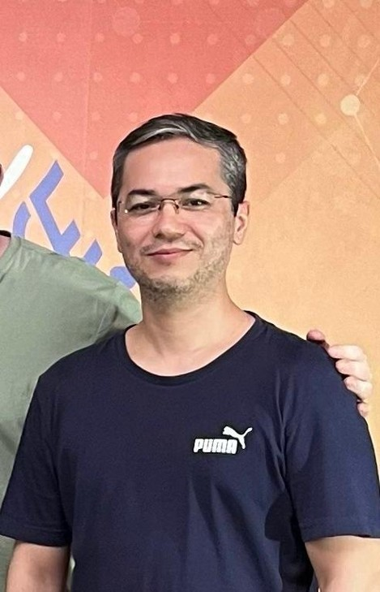 Gustavo Kiyoshi Massunari
Possui graduação em Farmácia pela Universidade Estadual de Maringá (2004), mestrado em Análises Clínicas (linha de pesquisa - Doenças Infecciosas e Parasitárias) pela Universidade Estadual de Maringá (2007), com experiência profissional na área de análises clínicas.
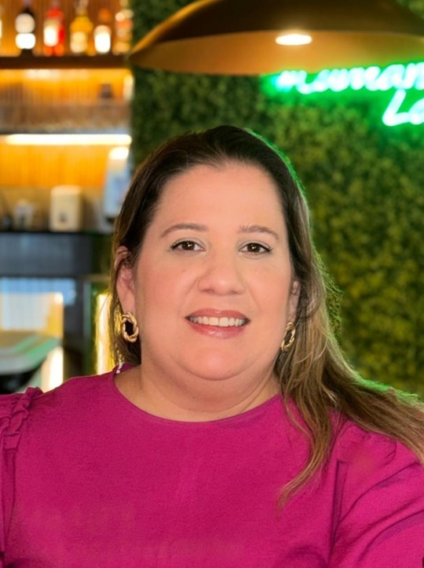 Katiuscia Dantas de Araújo
Farmacêutica com atuação nas áreas de Biologia Molecular e Análises Clínicas. Pós-graduada em Análises Clínicas pela Universidade Paulista (UNIP/AM) e graduada em Farmácia pelo Centro Universitário do Norte (UNINORTE/AM). Formação técnica em Patologia Clínica – Biodiagnóstico pelo Centro de Ensino Literatus (CEL/AM) e graduação em Formação de Executivos pela Universidade Potiguar (UNP/RN). Experiência em técnicas laboratoriais aplicadas à Biologia Molecular e diagnóstico clínico laboratorial, com ênfase em metodologias como qPCR, extração de ácidos nucleicos e outras abordagens moleculares.
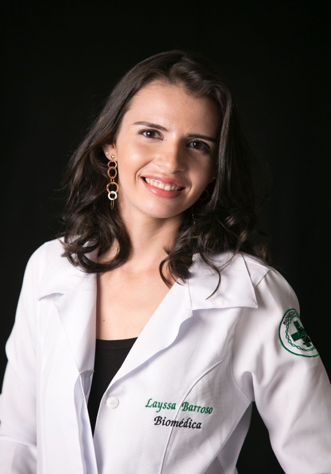 Layssa do Carmo Barroso
Biomédica especialista em microbiologia Clínica, Epidemiologia de Campo e mestre em saúde pública. Servidora do Laboratório Central de Saúde Pública da Fundação de Vigilância em Saúde do Amazonas (FVS-AM).
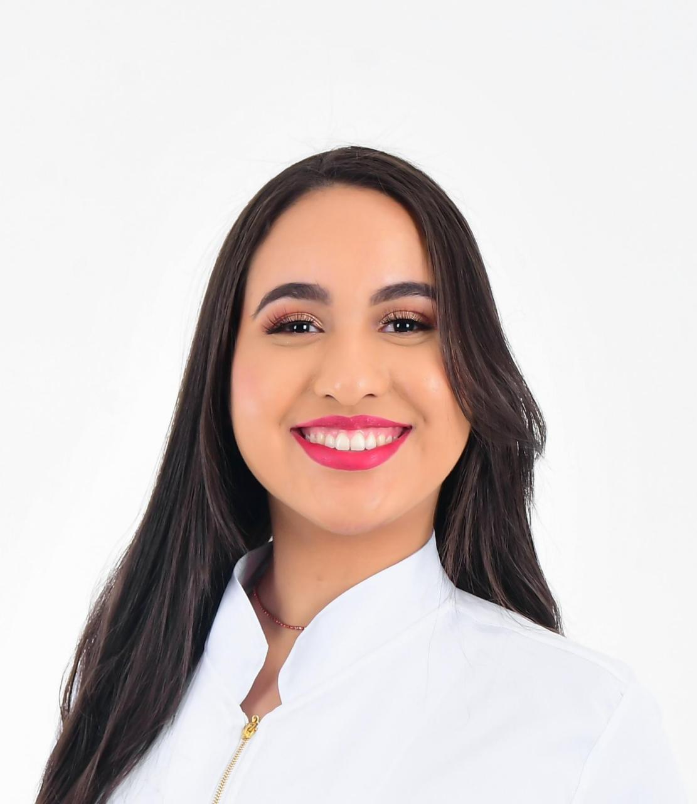 Lilian Eduarda de Oliveira Freitas
Possui graduação em Biomedicina pelo Centro Universitário Fametro. Foi bolsista da Fundação Centro de Controle de Oncologia do Estado do Amazonas e da Fundação de Vigilância em Saúde do Amazonas atuando em pesquisas relacionadas a técnicas de biologia molecular. Possui experiência em técnicas de diagnóstico laboratorial de Tuberculose e Testes de sensibilidade a fármacos. Atualmente atua no Laboratório Central de Saúde Pública do Amazonas (LACEN-AM).
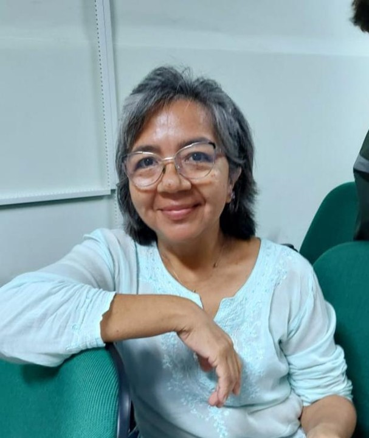 Marlucia da Silva Garrido
Profissional com formação em Enfermagem e Obstetrícia pela Escola de Enfermagem de Manaus e em Direito pela UFAM, com especializações em Epidemiologia (Fiocruz) e Análise de Situação de Saúde (UFMG). Doutora em Doenças Tropicais e Infecciosas pela UEA/Fundação de Medicina Tropical do Amazonas. Foi coordenadora do Programa Estadual de Controle da Tuberculose no Amazonas de 2010 a 2021 e é membro fundadora da REDENFTB. Possui ampla experiência em Saúde Coletiva, com foco em epidemiologia, tuberculose, vigilância epidemiológica e laboratorial.
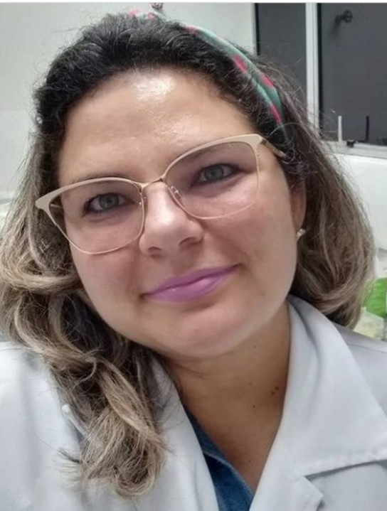 Renata Lia Coragem Carvalho
Possui graduação em Farmácia-Bioquímica pela Universidade Nilton Lins (2004). Atualmente é Bioquímica da Fundação de Vigilância em Saúde do Amazonas, atuando no Laboratório Central de Saúde Pública do Amazonas (LACEN/AM). Cursando Especialização em Gestão de Programas de Residência em Saúde do Sistema único de Saúde-GPRS. Tem experiência na área de Bioquímica, com ênfase em vigilância laboratorial.
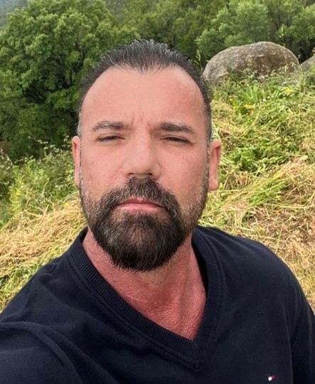 Walter André Junior
Profissional graduado em Farmácia e Bioquímica, com especializações em Docência no Ensino Superior, Análises Clínicas, Sexologia, Citologia Clínica e Farmácia Hospitalar.
Estado da Bahia
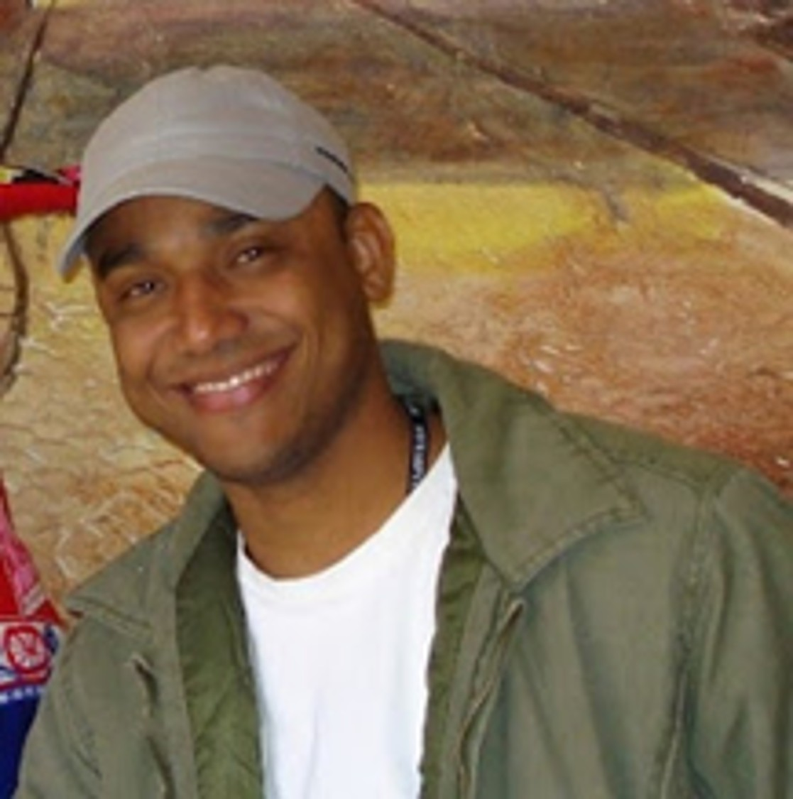 Erivelton Oliveira Bahia
Farmacêutico Bioquímico pela Universidade Federal da Bahia (UFBA), Especialização em Saúde Coletiva (ISC/UFBA). Sanitarista (ESPBA) e Mestrado (Fiocruz/Ba). Atuando no Laboratório de Micobacteriologia do LACEN/BA e no Laboratório Central do Hospital das Clínicas da Universidade Federal da Bahia (HUPES/UFBA) tem experiência no diagnóstico laboratorial de doenças de interesse da Saúde Pública.
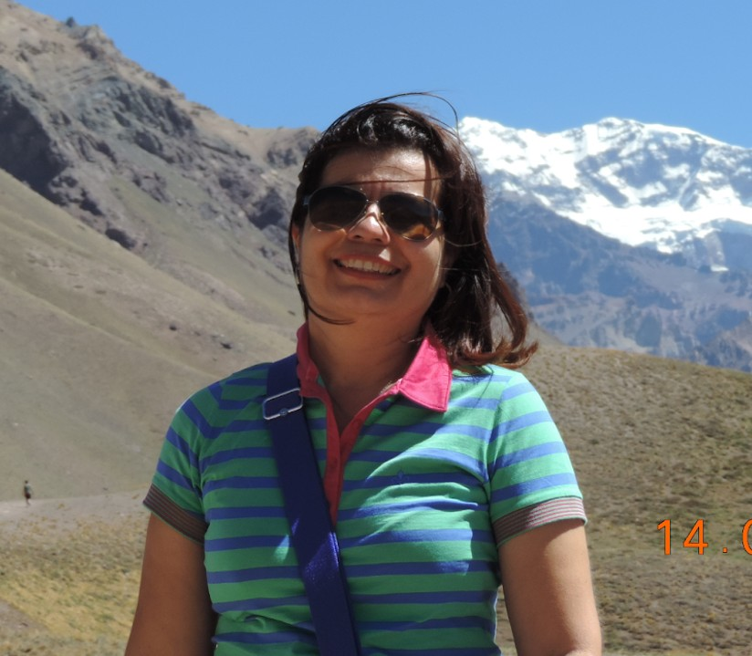 Felicidade Mota Pereira
Farmacêutica Bioquímica. Doutora em Ciências com ênfase em Biotecnologia em Saúde e Medicina Investigativa pela Fiocruz- Bahia. Servidora do Laboratório Central de Saúde Pública Gonçalo Moniz (LACEN/BA). Coordenadora dos Laboratórios de Vigilância Epidemiológica do LACEN-BA. Presidente da Comissão de Ensino e Pesquisa do LACEN-BA. Consultora da tecnologia de gestão Análise e Melhoria de Processos da Rede de Consultores Internos da Secretaria de Administração do Estado da Bahia.
Gabriela Sant’Ana Menezes de Andrade
Farmacêutica graduada pela Universidade Federal da Bahia (UFBA). Atua no Laboratório Central de Saúde Pública da Bahia (LACEN-BA) desde 2020, com foco na Vigilância Epidemiológica. Possui experiência na execução e monitoramento de análises laboratoriais de interesse em saúde pública, com atuação em diversas plataformas de sequenciamento genético, incluindo tecnologias da Illumina e Ion Torrent. Contribui para o fortalecimento das ações de vigilância, detecção e resposta a eventos de importância em saúde pública no estado da Bahia.
Ingrid Pimentel Silva Gabriel
Biomédica graduada pelo Centro Universitário UNIME e participa do Grupo de Pesquisa Clínica na Fiocruz em Tuberculose. Possui interesse em epidemiologia genômica, com foco em patógenos humanos, trabalhando na identificação de genes de resistência a antibiótico através de ferramentas de bioinformática. Atualmente, realiza estudos com foco em M. tuberculosis, identificando clusters na cidade de Salvador-Bahia.
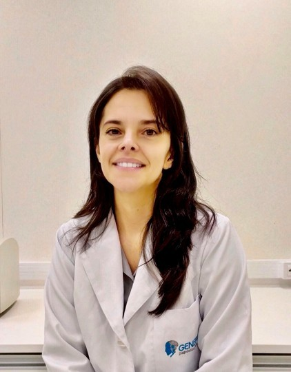 Marcela Kelly Astete Gomez
Profissional graduada em Biomedicina pela UNIT (2003), com especialização em Citogenética Humana pela UCSAL (2007) e mestrado em Biotecnologia em Saúde e Medicina Investigativa pela FIOCRUZ-BA (2011). Possui mais de 13 anos de experiência em Biologia Molecular, com atuação internacional no Chile por 8 anos, trabalhando com sequenciamento Sanger e de nova geração (NGS) nas plataformas Ion Torrent, Illumina e Nanopore. No Brasil, também operou a plataforma MinION. Atuou como analista especialista em NGS, gerente de laboratório e responsável pelo atendimento a clientes globais na América Latina e Brasil.
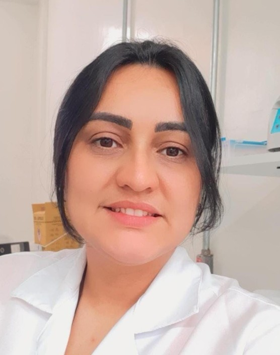 Vanessa Brandão Nardy
Graduada em Ciências Biológicas pela Universidade Estadual do Sudoeste da Bahia, obtida em 2006, e título de mestre em Biotecnologia em Saúde e Medicina Investigativa pela Fundação Oswaldo Cruz, no Centro de Pesquisa Gonçalo Moniz, concluído em 2010. Atualmente, exerce a função de analista clínica no Laboratório Central de Saúde Pública da Bahia (LACEN/BA), com atuação no setor de Vigilância Genômica. Detém vasta experiência em diagnóstico molecular de diversos microrganismos de relevância para a Saúde Pública.
Estado do Ceará
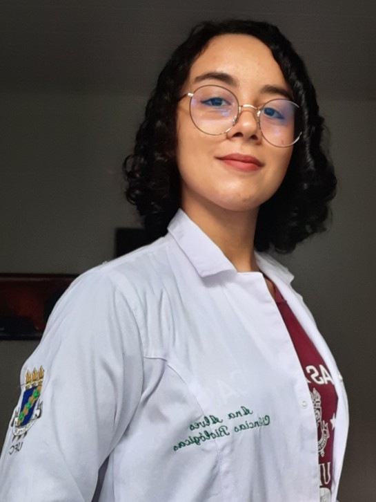 Ana Karoliny Alves
Mestranda em Patologia pela Universidade Federal do Ceará (UFC), com graduação em Ciências Biológicas – Bacharelado (UFC) e formação técnica em Nutrição e Dietética. Atuou como bolsista de Iniciação Científica no Laboratório de Micobactérias (2022–2024) e integrou o grupo PET Biologia UFC (2021–2024), desenvolvendo atividades de ensino, pesquisa e extensão. Participou da Empresa Júnior Mata Branca Jr. e foi monitora de disciplinas de Biologia Celular em 2021. Possui experiência em Microbiologia, com ênfase em Microbiologia Médica (Micobactérias) e Biologia Molecular de microrganismos.
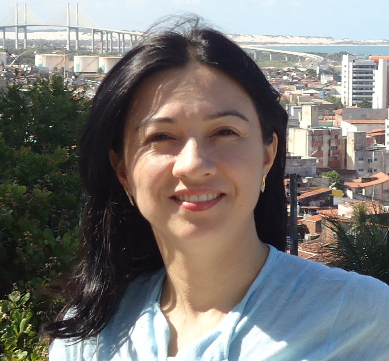 Cristiane Cunha Frotaa
Graduação em Farmácia e Análises Clínicas (1993), mestrado em Patologia (1995) e doutorado em Micobactérias pela University College London – National Institute for Medical Research (2002). Professora Titular da Faculdade de Medicina da Universidade Federal do Ceará (UFC). Atualmente, coordena o Programa de Pós-graduação em Patologia, o Laboratório de Micobactérias e o Laboratório de Bioagentes Patogênicos NB3-NBA3 da UFC. Seus interesses são em Micobacteriologia.
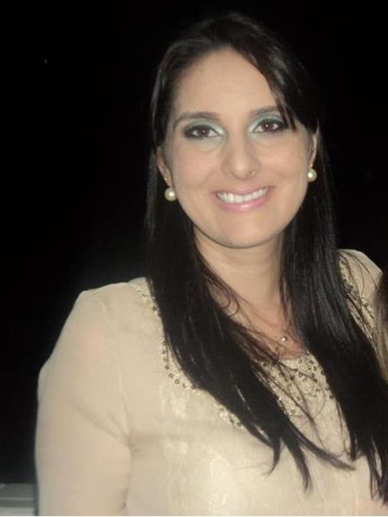 Larissa Leao Ferrer de Sousa
Possui graduação em Medicina Veterinária pela Universidade Estadual do Ceará (2005). Mestrado em Saúde Pública pela Universidade Federal do Ceará (UFC). Tem experiência na área de Saúde Coletiva, com ênfase em Saúde Pública, trabalho por 10 anos Vigilância Sanitária e controle de endemias e zoonoses na esfera Municipal. Coordenou por 5 anos o Programa Estadual de Leptospirose e Peste. Atualmente desenvolve suas atividades no Laboratório Central de Saúde Pública (LACEN-CE) no setor de Diagnóstico de Raiva.
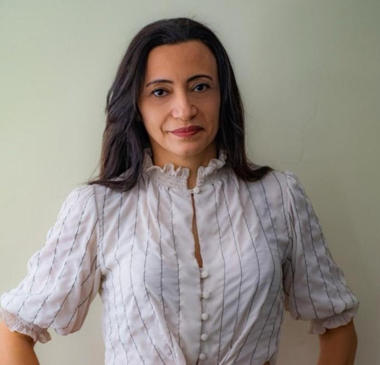 Shirlene Telmos Silva de Lima
Farmacêutica pela UFC (2000), com especializações em Análises Clínicas (2003) e em Bioquímica e Biologia Molecular (2014). Mestre em Saúde Pública (2013) e doutora em Ciências Médicas (2020), ambos títulos também pela UFC. Atua no LACEN/CE, onde coordena o setor de Sequenciamento Genético, com foco em SARS-CoV-2 e arboviroses, além de atividades nas áreas de Epidemiologia, Virologia e Biologia Molecular. É pesquisadora colaboradora do LEVE/UNICAMP, pesquisadora visitante no De Souza Lab da Universidade de Kentucky (EUA) e epidemiologista formada pelo programa da Johns Hopkins.
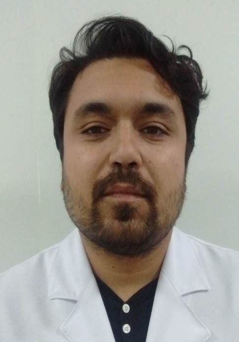 Sidarta Lopes Viana
Biólogo formado pela Universidade Federal do Ceará, com mestrado em Ecologia e Recursos Naturais, na linha de pesquisa em conservação e manejo de recursos hídricos. Atua desde 2012 como servidor público estadual no LACEN/CE, com ampla experiência em atividades laboratoriais, especialmente no setor de Sequenciamento Genético, desenvolvendo ações de vigilância genômica de arboviroses e vírus respiratórios. Possui experiência nas áreas de Ecotoxicologia, Saúde Pública e Epidemiologia.
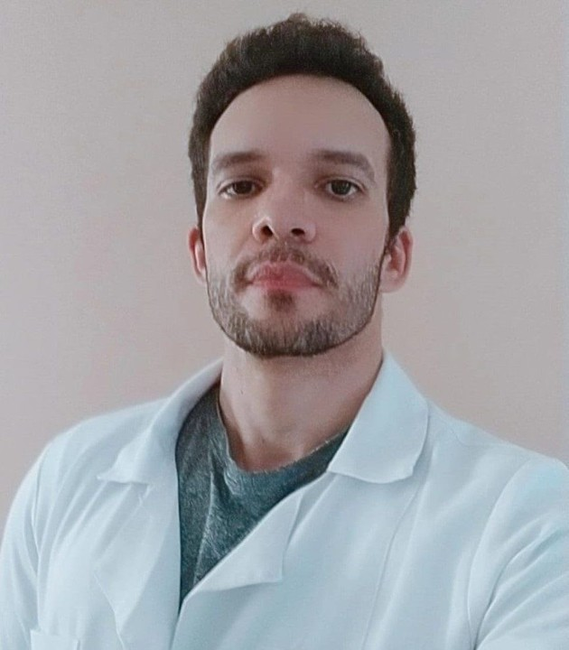 Thiago Pinto Brasil
Bacharel em Biomedicina pelo Centro Universitário Christus (Unichristus) e especialista em Microbiologia Clínica pela mesma instituição. Com uma sólida formação, concluiu cursos de aperfeiçoamento em Instrumentação Laboratorial e Biologia Molecular e Biotecnologia pela FAMEESP. É mestre em Patologia pela Faculdade de Medicina da Universidade Federal do Ceará (UFC), com ênfase em Doenças Infecto-parasitárias, onde foi bolsista do CNPq. Atualmente é acadêmico de doutorado na UFC.
Vania Angelica Feitosa Viana
Possui graduação em Farmácia pela Universidade Federal do Ceará (2004); Especialização em Hematologia Clínica pela Universidade Federal do Ceará (2005); Mestrado em Farmacologia pela Universidade Federal do Ceará (2020) e está cursando o doutorado em Ciências Médicas pela Universidade Federal do Ceará. Atualmente é servidora pública da Secretaria de Saúde do Estado do Ceará, lotada no Laboratório Central de Saúde Pública. Tem experiência na área de Biologia Molecular e Vigilância Laboratorial, atuando principalmente no diagnóstico molecular de Vírus Respiratórios e Sequenciamento Genético (SARS-CoV-2 e arbovírus).
Estado da Pará
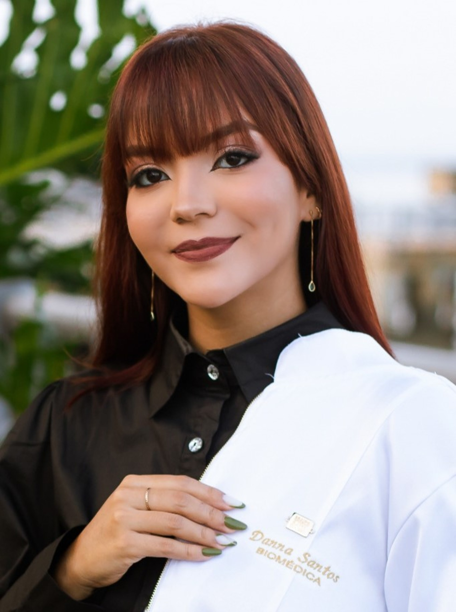 Danna Karen Corrêa dos Santos
Danna é graduada em Biomedicina pela Universidade do Estado do Pará (UEPA) e foi bolsista de iniciação científica no Instituto Evandro Chagas (IEC). Possui experiência em simulação computacional aplicada à resistência bacteriana, com foco em M. tuberculosis, apoio em bioinformática e em análises microbiológicas focadas na detecção e caracterização de bactérias patogênicas. Além disso, atuou em inquérito de representatividade nacional, contribuindo para estudo sócio epidemiológico avaliando o quadro clínico e os recursos diagnósticos e terapêuticos disponíveis para pacientes atendidos em Hospital Universitário (HU). Atualmente é acadêmica de mestrado do programa de pós-graduação Biologia Parasitária na Amazônia (BPA) da UEPa.
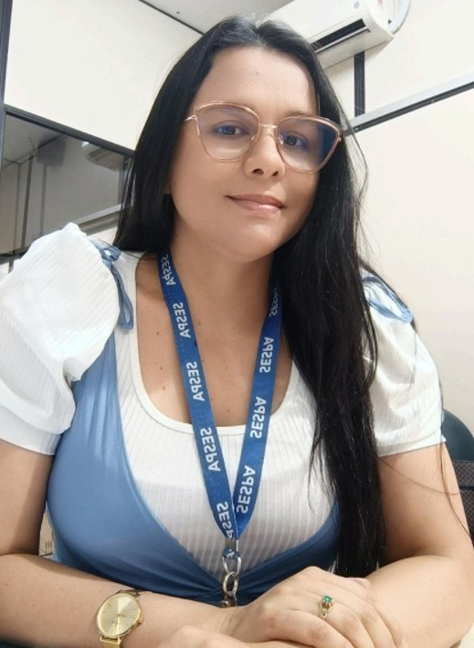 Erilene Cristina da Silva Furtado
Biomédica graduada pela UNIFAMAZ (2017), com mestrado em Virologia pelo Instituto Evandro Chagas (2020), com foco em epidemiologia de arbovírus. Possui diversas especializações nas áreas de Perícia Criminal e Ciências Forenses, Microbiologia Avançada, Biologia Molecular e Vigilância em Saúde no enfrentamento da COVID-19 (FIOCRUZ). Atua como bolsista no projeto da Rede Nacional de Vigilância Genômica de Bactérias Multirresistentes no Brasil, com experiência em virologia, microbiologia e vigilância genômica.
Gleissy Adriane Lima Borges
Graduação em Farmácia Bioquímica pelo Centro Universitário do Estado do Pará (2000). Pós graduada em Biologia Molecular com habilitação em Bioinformática pela UTFPR além de Análises e Farmácia Clínica. Mestra em Virologia pelo Instituto Evandro Chagas/PA. Atualmente ocupa o cargo de Servidor Público Estadual no Laboratório Central do Estado do Pará (LACEN-PA). Tem experiência na área de Bioquímica, com ênfase em Biologia Molecular (arbovírus e vírus respiratórios) e sequenciamento genético em plataforma de alto desempenho.
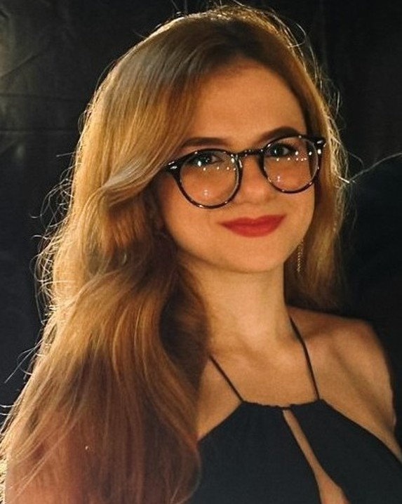 Layana Rufino Ribeiro
Layana é graduada em Ciências Biológicas pela UEPA e mestranda em Epidemiologia e Vigilância em Saúde pelo Instituto Evandro Chagas (IEC). Possui experiência em sequenciamento genômico completo de micobactérias, com foco em Mycobacterium tuberculosis. Atua em pesquisas laboratoriais na área de biologia molecular aplicada ao estudo de patógenos bacterianos, com ênfase em resistência bacteriana e em abordagens moleculares, epidemiológicas e genômicas para o estudo da tuberculose.
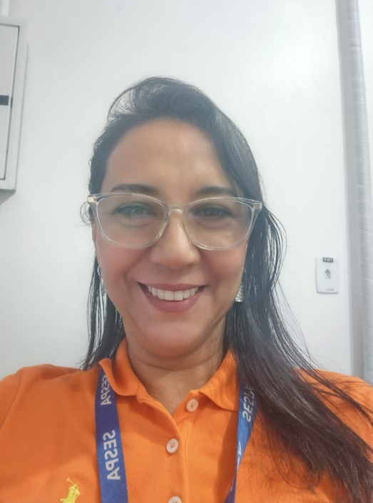 Luna Luana de Jesus Pantoja
Graduada em farmácia bioquímica pela UFPA. Desde 2005 atua como farmacêutica bioquímica no Lacen /Sespa. Atualmente desenvolve suas atividades no laboratório da tuberculose, é monitora do teste TRM, atua também nos diagnósticos de culturas da rede e teste IGRA.
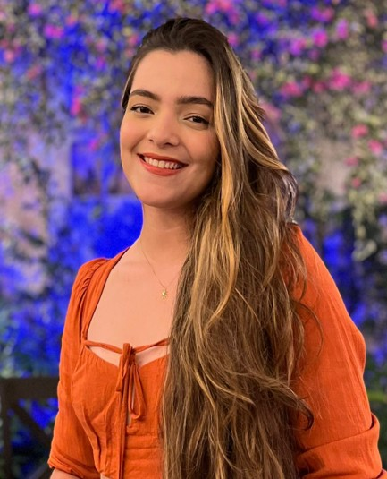 Maria Isabel Montoril Gouveia
Isabel é Graduada em Ciências Biológicas pela Universidade do Estado do Pará (UEPA) e mestranda pelo Programa de Pós-graduação em Epidemiologia e Vigilância em Saúde (PPGEVS) no Instituto Evandro Chagas (IEC). Possui experiência no fluxo de diagnóstico de micobactérias (realização de exames de Baciloscopia, Cultura e Teste de Sensibilidade) e em técnicas de biologia molecular voltadas para identificação e tipagem de patógenos bacterianos.
Rafaella Bonfim Barros
Graduada em farmácia com habilitação em Bioquímica (Centro Universitário do Estado do Pará). Especialista em Toxicologia (Universidade Federal do Pará), especialista em Atenção Farmacêutica (Centro Universitário do Estado do Pará). Servidora pública estadual da Secretaria de Estado de Saúde (SESPA). Atua na Seção de Bacteriologia e Micologia do Laboratório Central do Estado do Pará (LACEN-PA) como responsável pelo setor de Micobactérias. Desenvolvendo atividades de monitoramento das redes laboratoriais (TRM-TB, Cultura Ogawa, Baciloscopia, IGRA), dos fluxos laboratoriais, bem como realização de exames de cultura, teste de sensibilidade e de técnicas de biologia molecular.
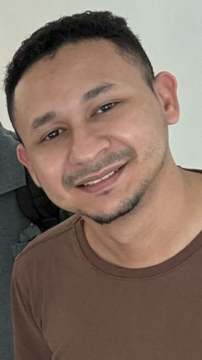 Victor Cezar Gomes Melo
Possui graduação em Biomedicina pela Universidade Federal do Pará (2019). Possui experiência em biologia molecular, genética e bioquímica com ênfase em pesquisa e aplicação clínica. É habilitado em análises clínicas e Imaginologia. Concluiu a Residência Multiprofissional em Oncologia pelo Hospital João de Barros Barreto (2019-2021). Mestre em Farmacologia e Bioquímica pela Universidade Federal do Pará (2023). Atualmente, está trabalhando na Fundação HEMOPA e na Secretaria de Saúde do estado do Pará (SESPA) e LACEN-PA.
Equipe Capacitadora
A equipe responsável pelas capacitações teóricas e práticas em bioinformática atua na criação de conteúdos didáticos, organização dos eventos, preparação das aulas, elaboração de formulários avaliativos, publicação das aulas gravadas, compartilhamento de materiais e mediação da comunicação entre os participantes. O grupo se reúne periodicamente e é composto pelos seguintes membros.
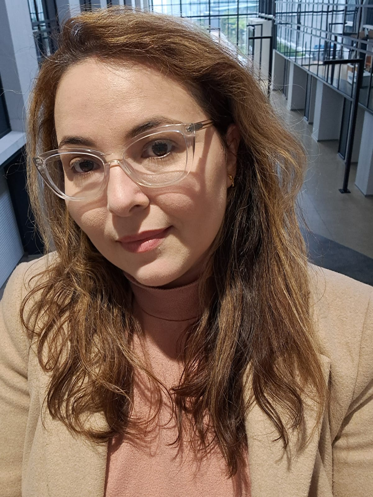 Emilyn Costa Conceição
Bióloga (Universidade Federal do Pará), com mestrado em Doenças Infecciosas (Universidade Estadual do Pará) e doutorado em Microbiologia (Universidade Federal do Rio de Janeiro/Universidade Paris-Sud). Emilyn tem experiência em ensaios clínicos e diagnósticos de rotina com foco em biologia molecular aplicada a MTBC, NTM e Mycobacterium leprae. Ela se interessa por epidemiologia, genômica, resistência a medicamentos, bioinformática e educação científica. Atualmente é pesquisadora de pós-doutorado no TB Genomics, na Universidade de Stellenbosch, Cidade do Cabo, África do Sul, desde 2021. Sua pesquisa atual se concentra em medicina personalizada por meio do WGS como parte do SMARTT-Trial e GenPath-Africa (PARR-TB).
Função: Capacitadora Principal em Laboratório e Interpretação dos Dados de Bioinformática
Abhinav Sharma
Engenheiro da Computação e mestre em Ciência de Dados. É doutorando e bioinformático no grupo de Bioinformática da Universidade de Stellenbosch. Seu principal projeto é “Ferramentas de última geração para análise de dados de sequenciamento de M. tuberculosis usando técnicas independentes de tecnologia impulsionadas por Machine Learning”. Ele tem sido um membro ativo da comunidade Nextflow e nf-core, apaixonado por capacitar pesquisas e diagnósticos em países de baixa e média renda por meio de programas de capacitação.
Função: Capacitador Principal em Bioinformática
Davi Josué Marcon
Biotecnologista graduado pela Universidade Federal do Pará (UFPA), mestre em Biologia Parasitária na Amazônia (BPA) pela Universidade do Estado do Pará (UEPA) e doutorando no BPA/UEPA. Com foco em epidemiologia genômica, seus principais interesses incluem a busca por variantes de resistência, especialmente para novas drogas anti-TB, simulação computacional de proteínas e computação de alto desempenho utilizando pipelines desenvolvidos em Nextflow. Davi possui experiência em projetos de metagenômica e genômica.
Função: Monitor Geral das Capacitações
Hendor Neves Ribeiro de Jesus Bacharel em biotecnologia (Universidade Federal da Bahia), possui mestrado e doutorado pelo Programa Multicêntrico em Bioquímica e Biologia Molecular (Universidade Federal da Bahia). Possui experiência em microbiologia e bioinformática, vem realizando estudos nas áreas genômica estrutural, genômica comparativa de patógenos humanos, tendo como alvo principal a predição de genes de resistência a antibióticos e fatores de virulência, além disso trabalha com identificação de microrganismos através de análises filogenéticas e filogenômicas.
Função: Monitor do estado da Bahia e Apoio nas Capacitações
Lilian Eduarda de Oliveira Freitas | Faz também parte da equipe em capacitação continua e sua biografia profissional está resumida acima.
Função: Monitora do estado da Bahia, responsável em mediar a comunicação local entre os demais participantes do estado do Ceará e o grupo geral.
Layana Rufino Ribeiro | Faz também parte da equipe em capacitação continua e sua biografia profissional está resumida acima.
Função: Comunicadora geral. Responsável de mediar a comunicação geral entre os participantes nos fóruns e canais de comunicação.
Danna Karen Corrêa dos Santos | Faz também parte da equipe em capacitação continua e sua biografia profissional está resumida acima.
Função: Comunicadora geral. Responsável de mediar a comunicação geral entre os participantes nos fóruns e canais de comunicação.